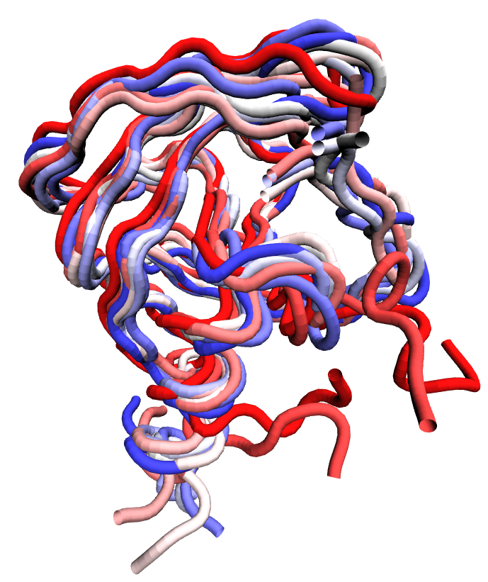

Conformational ensemble of HIV-1 protease (PDB ID: 3TTP) backbone atoms harvested from a one microsecond equilibrium molecular dynamics simulation run at constant temperature and pressure. Each backbone is colored based on timestep in the ensemble.